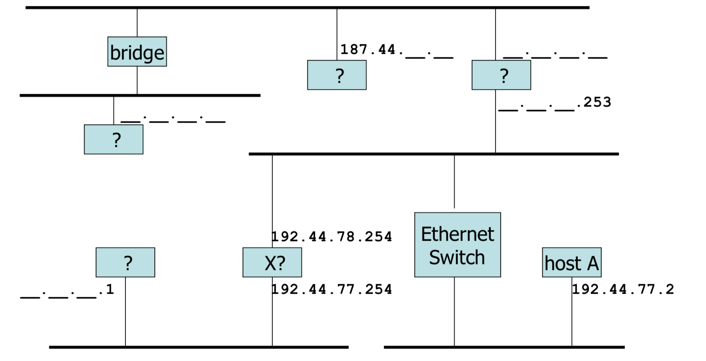
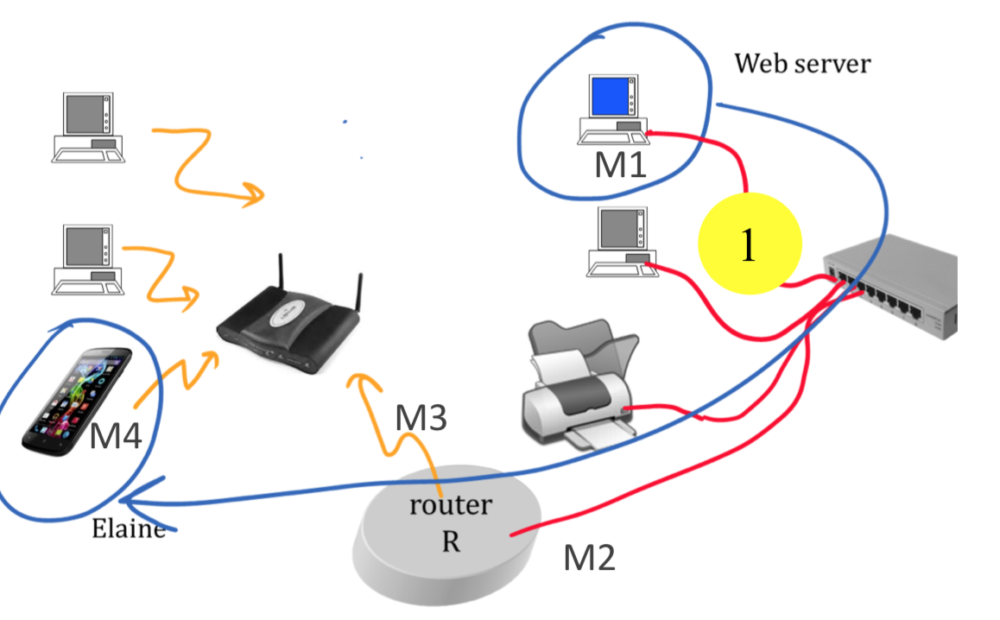
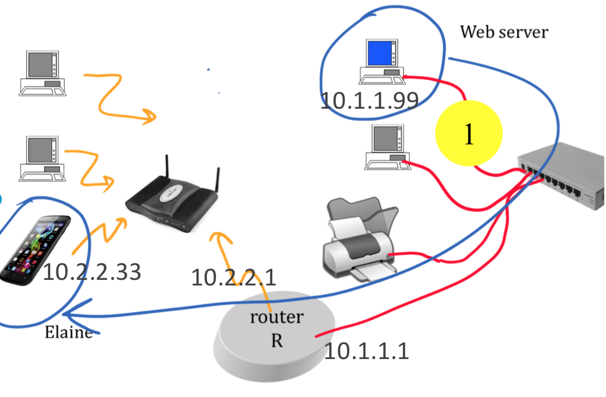

The hex notation 2001::bad:babe denotes a string of
[ ] 32 bits
[ ] 44 bits
[ ] 48 bits
[ ] 64 bits
[ ] 128 bits
When a NAT has a packet to forward and an association exists in the NAT table…
[ ] The NAT looks for a longest prefix match
[ ] The NAT looks for an exact match
[ ] None
From WAN to LAN the NAT may modify
[ ] The source port
[ ] The destination port
[ ] None
Can Host A have this address ? Masks are all 255.255.255.0
q44
[ ] Yes
[ ] No
The IPv4 Subnet Mask at ETHZ is …
[ ] 255.255.255.0
[ ] 255.255.255.1
[ ] 255.255.255.2
[ ] 255.255.255.192
[ ] 255.255.255.198
[ ] ffff:ffff:ffff:ffff::
[ ] ffff:ffff:ffff:ffff:c000::
The IPv4 Subnet Mask at ETHZ is …
[ ] 255.255.255.0
[ ] 255.255.255.1
[ ] 255.255.255.2
[ ] 255.255.255.192
[ ] 255.255.255.198
[ ] /48
[ ] ffff:ffff:ffff:ffff::
[ ] ffff:ffff:ffff:ffff:c000::
What is the subnet broadcast address for subnet 129.132.100.0/26 ?
[ ] 129.132.100.0
[ ] 129.132.100.15
[ ] 129.132.100.63
[ ] 129.132.100.192
[ ] 129.132.100.255
Lisa’s PC, at home behind a NAT, sends an IP packet to a server in theUS. The IP source address in the packet, seen at the US server, is …
[ ] the IP address allocated to Lisa’s NAT by her ISP.
[ ] the home-network-IP-address of Lisa’s nexthop router.
[ ] There is no IP address since Lisa is not on the LAN of the US server.
[ ] home-network-IP-address of Lisa’s PC.
An application program sends data to a destination using either TCP or UDP. One of the packets is lost. Is it true that the application program must detect theloss and retransmit the packet ?
[ ] no in either case.
[ ] yes with TCP, no with UDP.
[ ] yes with UDP, no with TCP.
[ ] yes in both cases.
Say what is true for forwarding packets:
[ ] A router uses longest-prefix match, a bridge uses exact match.
[ ] A bridge uses longest-prefix match, a router uses exact match.
[ ] Routers and bridges use longest-prefix match.
[ ] Routers and bridges use exact match.
Lisa’s PC, at EPFL, receives an IP packet from a server in the US. TheMAC source address in the packet (seen at Lisa’s PC) is the MAC address of …
[ ] Lisa’s DNS server.
[ ] the server in the US.
[ ] There is no MAC address since the packet is coming from another LAN.
[ ] Lisa’s next hop router.
The stop and go protocol for retransmissions is efficient whenever
[ ] the transmission rate is large.
[ ] the bandwidth-delay product is large.
[ ] the transmission rate is small.
[ ] the bandwidth-delay product is small.
Which are valid IPv4 addresses ?
128.178.129.179
228.278.229.279
[ ] 1
[ ] None
[ ] 2
[ ] Both
We multiply the bit rate of a line by a factor of 10. Say what is true.
The propagation time is divided by 10
The transmission time is divided by 10
[ ] Only 1.
[ ] None
[ ] Both
[ ] Only 2.
Which are valid IPv6 addresses ?
2001:baba::bebe
2001::baba:bebe
[ ] Only 1.
[ ] Only 2.
[ ] None
[ ] Both
Inside the IP header we can read:
The IP address of the source;
The DNS name of the destination.
[ ] Only 2.
[ ] Both
[ ] Only 1.
[ ] None
Bart’s smartphone, at EPFL, receives an IP packet from a server in theUS. The IP source address in the packet (seen at Bart’s smartphone) is the IP addressof …
[ ] the server in the US.
[ ] There is no IP address since Bart is not on the LAN of the US server.
[ ] Bart’s DNS server.
[ ] Bart’s next hop router.
A difference between TCP and UDP is…
[ ] TCP does not repair packet losses, UDP does
[ ] TCP repairs packet losses, UDP does not
[ ] TCP is only in end-systems, UDP is also in routers
[ ] TCP is also in routers, UDP is only in end-systems
Which of these hosts have the same network part ?
Host A: IP address 10.1.1.1 mask 255.255.0.0
Host B: IP address 10.1.2.1 mask 255.255.0.0
Host C: IP address 10.2.2.1 mask 255.255.0.0
[ ] None, all hosts are indifferent subnets
[ ] All hosts are in the samesubnet
[ ] B and C are in the same subnet, A is not
[ ] A and C are in the same subnet, B is not
[ ] A and B are in the same subnet, C is not
I use my laptop to communicate over WiFi when I am at EPFL and when I am at ETHZ (I don’t use a VPN). The MAC address used assource address inthe frames sent by my laptop are…
[ ] the same whether my laptop is atEPFL or ETHZ
[ ] different when my laptop is at EPFLor ETHZ
[ ] it depends whether I use IPv4 orIPv6 (assuming I use only one ofthese two)
Say which one is a MAC Layer PDU …
[ ] A bit
[ ] An Ethernet frame
[ ] An IP packet
[ ] A TCP segment
In an IP packet header there is …
[ ] the DNS names of the source and ofthe destination of the IP packet
[ ] the DNS name of the destination only
[ ] the DNS name of the source only
[ ] None of the above
The uncompressed versionof the IPv6 address 2001:510:bad::babe is…
[ ] 2001:0510:0bad:0000:babe
[ ] 2001:0510:0bad:0000:0000:babe
[ ] 2001:0510:0bad:0000:0000:0000:babe
[ ] 2001:0510:0bad:0000:0000:0000:0000:babe
[ ] None of the above
Web server sends a packet to Elaine. We observe the packet at (1) (there is no NAT). What is the destination MAC address ?
q45
[ ] M1
[ ] M2
[ ] M3
[ ] M4
[ ] There is no MAC address on Ethernet
Web server sends a packet to Elaine. We observe the packet at (1)(there is no NAT).What is the IP destination address ?
q46
[ ] 10.1.1.99
[ ] 10.1.1.1
[ ] 10.2.2.1
[ ] 10.2.2.33
The function of the Address Resolution Protocol (ARP) is to…
[ ] Obtain the IPv4 address of the next hop when we know theIPv4 address of the final destination
[ ] Obtain the IPv4 address of a system when we know its MACaddress
[ ] Obtain the MAC address of a system when we know its IPv4address
[ ] Obtain the IPv4 address of a system when we know its DNSname
The address 128:178::151::1 is…
[ ] An IPv4 address
[ ] An IPv6 address
[ ] A MAC address
[ ] Both an IPv4 and IPv6 address
[ ] None of the above
The Internet uses packet switching rather than store and forward because …
[ ] It decreases the error probability
[ ] It reduces buffers required inrouters
[ ] It increases the end-to-endthroughput
[ ] It makes the transport layer simpler
When a web browser connects to a web server, the DNS name of the webserver
[ ] … is contained in the IP packet headersof the packets sent by the web browserto the web server
[ ] … is contained in the IP packet headersof the packets sent by the web server tothe web browser
[ ] Both of the above
[ ] None of the above
Say what is true.
[ ] TCP adds reliability to theunderlying network layer
[ ] UDP adds reliability to theunderlying network layer
[ ] Both of the above
[ ] None of the above
When a web server sends a file to a web browser using TCP…
[ ] TCP is active in the end-systems(browser and web server) but not inrouters along the path
[ ] TCP is active in the end-systems(browser and web server) and in allrouters along the path
[ ] TCP is active in the end-systems(browser and web server) and insome routers along the path
[ ] TCP is active neither in the end-systems (browser and web server)nor in routers along the path
A webserver sends a file to Elaine. The IPd estination address of the packet captured at the server …
[ ] Is the IP address of Elaine’s device
[ ] Is the IP address of Elaine’s device orof the next router on the path
[ ] Is the IP address of the web server
Elaine receives a packet from a webserver. The MAC source address…
[ ] Is always the MAC address of the webserver
[ ] May in some cases be the MACaddress of Elaine’s device
[ ] Is never the MAC address of Elaine’sdevice
Give the best answer
[ ] 128.178.201.2 is an IPv4 address
[ ] 2001:4860:4860::8888 is an IPv6address
[ ] Both of the above are true
[ ] None of the above is true
traceroute (or tracert) is a program used to…
[ ] Find the IP addresses of allneighboring routers
[ ] Find the IP addresses of all routersinside a local area network
[ ] Find the IP addresses of all routersinside an enterprise network
[ ] Find the IP addresses of intermediaterouters along the path to adestination
We double the length of acommunication cable. Give the best answer.
[ ] The transmission time is doubled
[ ] The propagation time is doubled
[ ] Both transmission and propagationtimes are doubled
[ ] Neither transmission nor propagationtime is affected